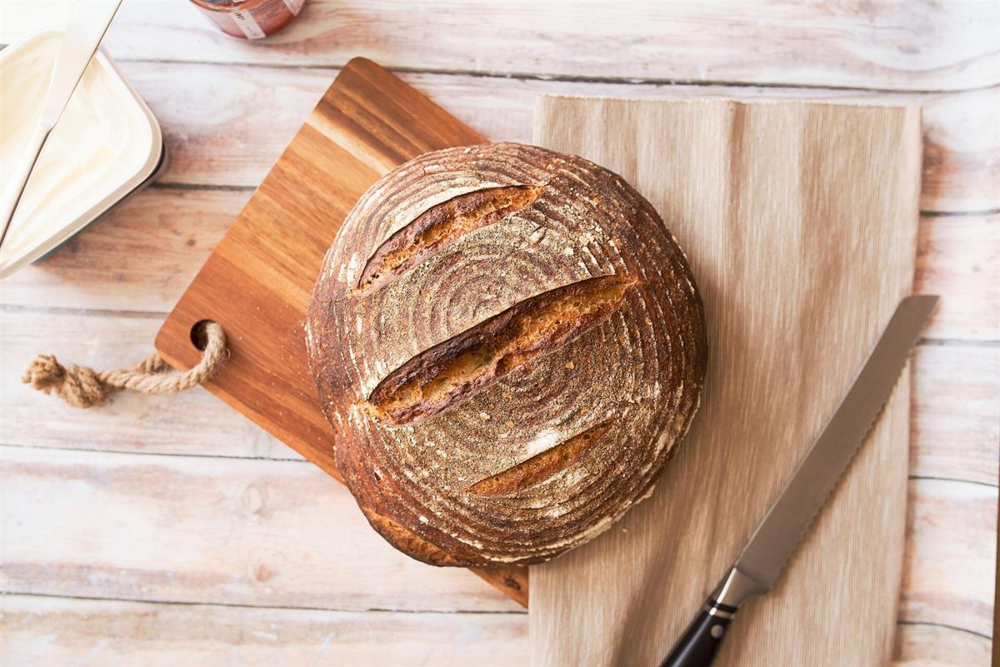
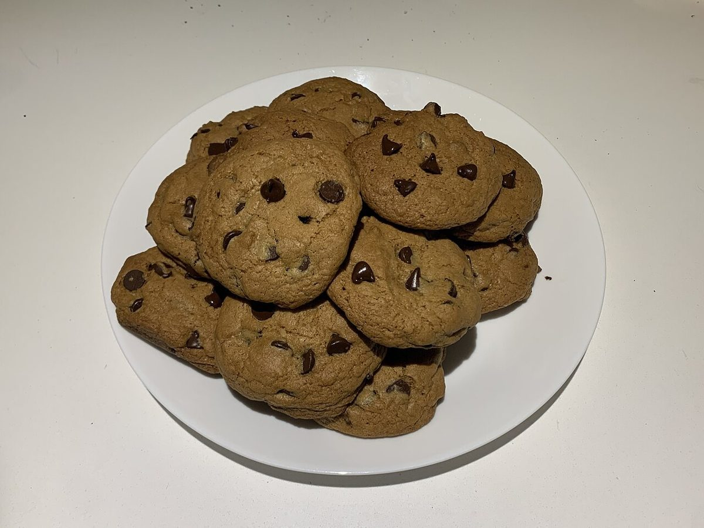

パン屋・焼き菓子 / 山形県山形市
kobata焼き菓子とパン
山形県山形市小白川町にある「kobata 焼き菓子とパン」のご案内ページです。営業時間やメニューなど、詳しいことは準備中。まずはInstagramをのぞいてみてください。

制作側の連想
「厚み定規」というデザイン
制作側の連想で、お店の理念・由来とは無関係です。パン屋・焼き菓子という業種から、生地を麺棒で伸ばすときに使う「厚み定規」を思い浮かべ、このサイトを5枚の定規に見立てました。上のメニュー下線が、ページごとに少しずつ太くなっているのはそのためです。数値は見た目の演出で、実際の商品の寸法ではありません。
厚みの見本(イメージ)
2mmから14mmまで、5つの厚み。
写真は厚みのイメージで選んだ、国外または撮影地不明のフリー素材です。お店で提供しているものを示すものではありません。
- 2mm

国外または撮影地不明のイメージ 粉のうすい層
- 4mm

国外のイメージ(米国) 伸ばした生地
- 6mm

撮影地不明のイメージ クッキーの厚み
- 10mm

撮影地不明のイメージ スライスの厚み
- 14mm

撮影地不明のイメージ 厚切りの厚み
ご案内
お店のこと(確認できたものだけ)
| 所在地 | 〒990-0021 山形県山形市小白川町１丁目５−３５ |
|---|---|
| 電話 | なし |
| 営業時間 | 準備中 |
| 定休日 | 準備中 |
| ご予約 | 準備中 |
| 駐車場 | 準備中 |
| SNS | Instagram @ko_ba_ta_ |